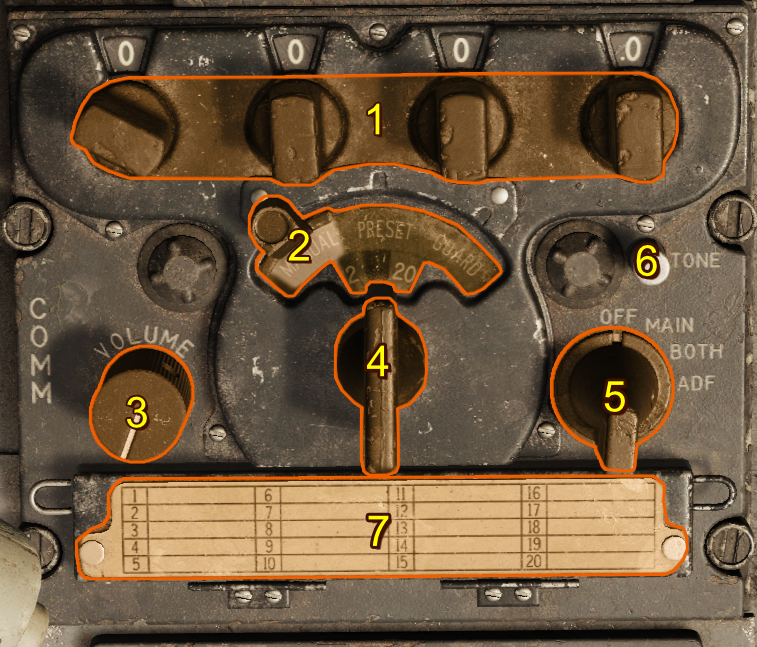
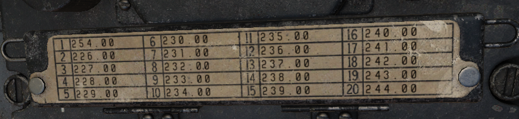
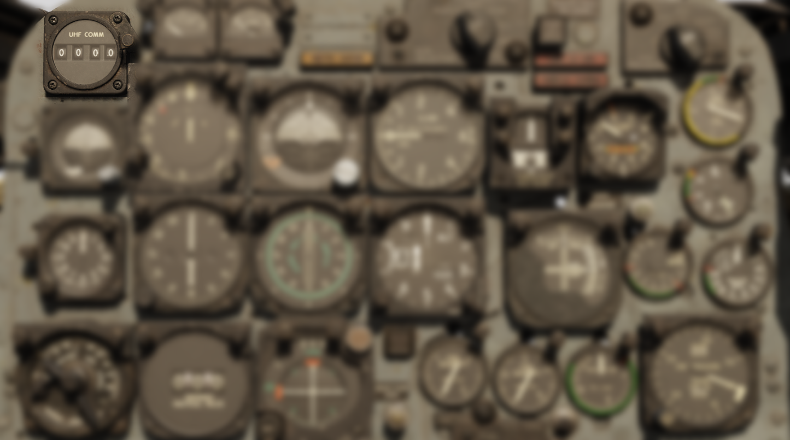

ARC-34 UHF Command Radio
Introduction
The onboard radio is powered by the aircraft’s primary bus, and enables voice communication within 225.0–399.9 MHz. Audio signals are processed through the AN/AIC-10 communication amplifier. The system features a control panel with access to 20 preset channels. Frequency selection can also be set manually.
This radio system employs two receivers:
- Primary receiver (responsible for standard communications)
- Guard receiver (fixed to a dedicated emergency frequency)
Note
Guard frequency is factory-set and cannot be changed without removing the remote-control unit from the aircraft. When selecting a new frequency, an automatic tuning mechanism synchronizes both the transmitter and receiver, completing the tuning cycle in approximately 4 seconds.
Controls

- Frequency Knobs
- Manual-Preset-Guard Sliding Selector
- Volume Control
- Preset Channel Selector Switch
- Function Switch
- Tone Button
- Frequency Card
Frequency Knobs
At the top of the radio panel, just below the four frequency display windows, are four small frequency selector knobs that set the freqency's 100s, 10s, 1s, and 0.1 increments, allowing manual selection of any of the 1,750 available frequencies in the 225.0–399.9 MHz range. 243.0 MHz is reserved as a guard channel.
Manual-Preset-Guard Sliding Selector
The sliding selector controls the method of command radio frequency selection. It is operated by sliding the control through a limited arc across the face of the panel. This control has three positions arranged so that when it is in any one position, the other two positions are masked by a semitransparent green glass:
| Selection | Description |
|---|---|
| MANUAL | The preset channel is deactivated and a mask is removed from in front of the four small windows across the top of the panel, revealing the numerals that make up an operating frequency set by the frequency knobs. |
| PRESET | Masks the 4 small windows above the frequency knobs and deactivates the manually selected frequency. This activates the 20 preset channels controlled by the channel selector switch. |
| GUARD | Tunes the transmitter and main receiver to the default guard frequency (243.0 MHz). |
Volume Control
The volume control regulates the sound level of the signal in the headset from both command receivers. Adequate control of volume is provided, but audio can't be silenced.
Preset Channel Selector Switch
The channel selector switch controls the selection of 20 preset frequencies by channel number. When rotated, channel numbers from 1 through 20 appear in the channel indicator window above the selector. This window is masked when the sliding selector control is placed in any position other than the PRESET position.
Function Switch
| Selection | Description |
|---|---|
| OFF | System inoperative |
| MAIN | Main receiver audible |
| BOTH | Guard and main receivers audible |
| ADF | Enables Automatic Direction Finding (ADF), and disconnects signals to the Radio Magnetic Indicator from the AN/ARN-6 Radio Compass |
Tone Button
When the command radio is operating, pressing and holding the tone button transmits a continuous tone to the set frequency, and interrupts reception. A side tone is audible in the headphones while the button is pressed. This feature can be used for direction-finding operations in conjunction with other aircraft and ground stations.
Frequency Card

The frequency card notes channel presets and their frequencies.
Default Preset Channels
| Preset Channel | Frequency (MHz) |
|---|---|
| Channel 1 | 225.0 |
| Channel 2 | 226.0 |
| Channel 3 | 227.0 |
| Channel 4 | 228.0 |
| Channel 5 | 229.0 |
| Channel 6 | 230.0 |
| Channel 7 | 231.0 |
| Channel 8 | 232.0 |
| Channel 9 | 233.0 |
| Channel 10 | 234.0 |
| Channel 11 | 235.0 |
| Channel 12 | 236.0 |
| Channel 13 | 237.0 |
| Channel 14 | 238.0 |
| Channel 15 | 239.0 |
| Channel 16 | 240.0 |
| Channel 17 | 241.0 |
| Channel 18 | 242.0 |
| Channel 19 | 243.0 |
| Channel 20 | 244.0 |
Note
You can set new presets for each F-100D unit in the DCS mission editor.
Remote Channel Indicator
The remote channel indicator is synchronized to the command radio control panel. When the radio is inoperative, its four display windows are blank. When the radio is in operation, they display information based on the selector control position:
| Selection | Description |
|---|---|
| PRESET | Preset command radio channel |
| MANUAL | Frequency (in MHz) of the selected channel |
| GUARD | GD |

Normal Operation
A complete operational check of the command radio is performed as follows:
- Before takeoff, check frequencies to be used against those listed on frequency card.
- Check settings of buttons on frequency control drum with frequency card. To do this, open door to which frequency card is attached. The channel number which corresponds to the preset frequency appears in a window at the left of the buttons. The frequency numbers of this channel are listed above the buttons.
- Check operation of transmitter and main receiver with sliding selector control in each position.
- Check operation of the guard receiver using the BOTH position of function switch.
- For initial channel selection, select a channel other than the one to be used until warm-up is completed, or after warm-up, switch to another channel and then back to the one desired. If the desired channel is selected before warm-up is completed, reduced performance due to mistuning can result.
- Adjust volume as desired.
- For manual selection of a frequency that is not included in the preset channels, moving sliding selector control to MANUAL. Use frequency knobs across top of panel to establish desired frequency. (The function switch must be at MAIN or BOTH for this operation.)
- To obtain transmission and reception of guard frequency only, move sliding selector control to GUARD, and turn function switch to MAIN. This prevent unequal or garbled reception by cutting out the guard receiver that operates when the function switch is at BOTH.
Emergency Operation
Sudden Loss of Transmission and Reception
If transmission or reception is unsatisfactory, adjust aircraft attitude or heading to improve line-of-sight alignment with the antenna.
Channel Selection After Engine Shutdown
If it is necessary to select another frequency channel, selection should be done as soon as possible after engine shutdown or engine failure, so that electrical power is available to complete selection.
Radio Not Operating
In the case of apparent failure of command radio, attempt operation in alternate positions of sliding selector control or alternate positions of function switch. Turn equipment off for several minutes; then turn function switch to type of operation desired. If the protective relay in the tuning mechanism was responsible, this action restores operation. Check the circuit breaker panel for tripped condition of the AN/AIC-10 amplifier.